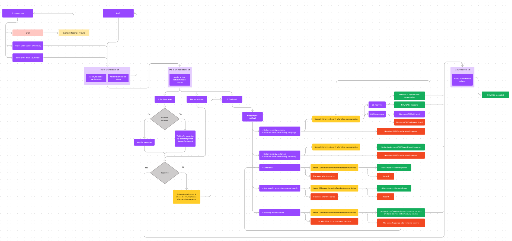
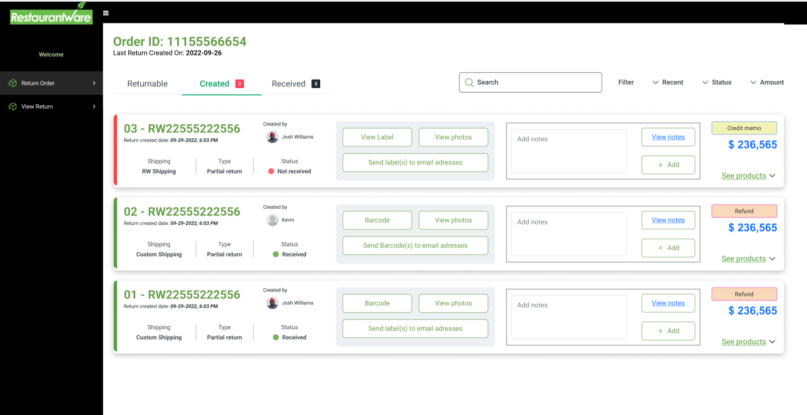
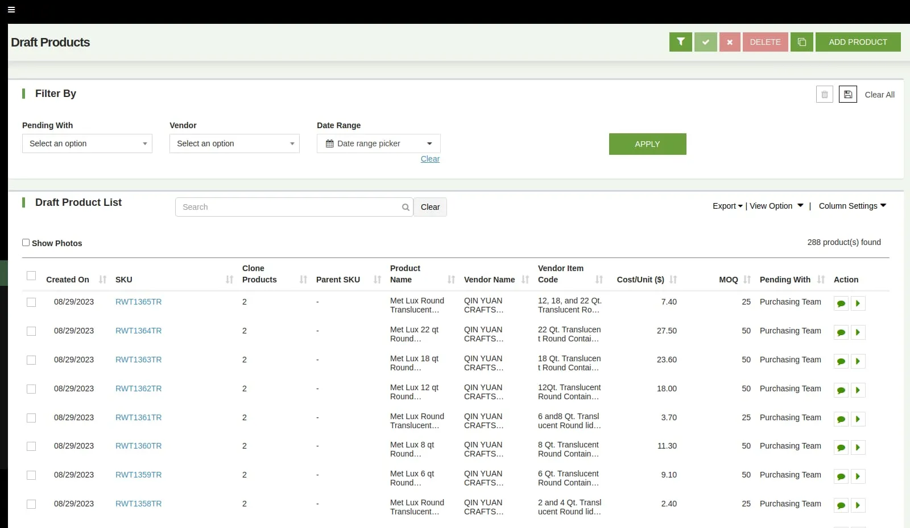
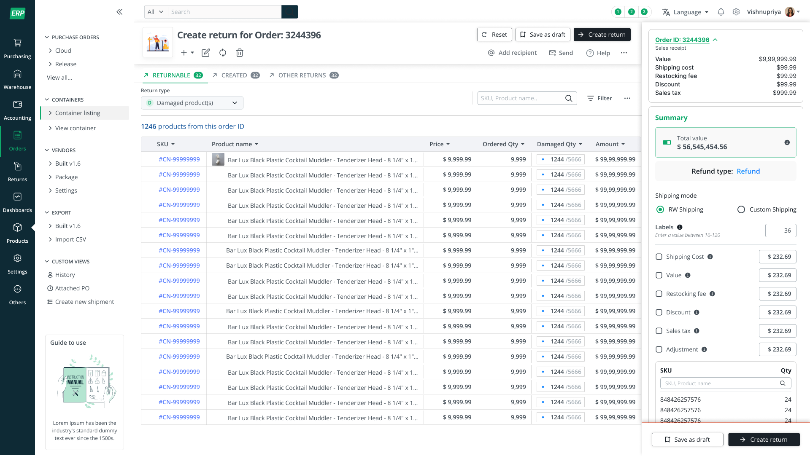

A closer look at the complete return lifecycle, key flows, iterations and every screen involved — part of ERP Suite 3.0.
Before returns, there's a product
ERP 2.0 forced every product — idea, live SKU, or full spec — through the same overloaded form. ERP Suite 3.0 splits that into three surfaces, one per stage.
Moves through six review stages between Content and Reviewer teams — a task board, not a form.
Grouped by lifecycle stage, so each team only sees the slice that's theirs to act on.
Nine ownership tabs, each with its own completion percentage — no one owns the whole 200+ attribute record.
That split came from shadowing purchasing, warehouse and merchandising teams — none of them thought of “a product” as one object, only ever a specific slice of it. The nav and tabs below followed from that map.
Existing products
Instead of one long list filtered ad hoc, existing products are grouped by state — the tab a person opens already tells them what needs doing next.
Product Ideation
Before a product is real, it's a batch of ideas moving through review — so the ideation screen reads like a pipeline with owners and dates, not a spreadsheet.
Every round is logged — who reviewed it, when, what changed — so a draft's history never needs asking around.
Product Specification
A live SKU carries 200+ attributes. Rather than one long form, it's split into nine tabs — each owned by a different team, each tracked by its own completion percentage.
Every tab shows its own completion percentage and missing-attribute flags, so a half-finished product is never a mystery. Color and retail-pack forks live under one Variation tab, so a new SKU is never a full rebuild.
Module highlight
Redesigned to support full or partial returns, full or partial replacements, and fraud prevention against fake returns — with the conditional logic (partial receipt, flagged items, CS intervention) mapped before any screen was drawn.



Before — ERP 2.0

After — ERP Suite 3.0